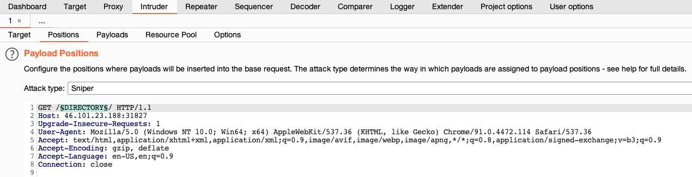

Burp Intruder
Date: 2025-01-09 16:18:59
Status: #draft
Tags: Certified Penetration Tester, Using Web Proxies
Description
Burp has other functions aside from a web proxy. It also has:
Web Fuzzers
Web Scanners
Add this to fuzzing apps like: - ffuf - dirbuster - gobuster - wfuzz
Note
This community version is throttled at 1 request per second. Use command line tools if you do not have the pro version
Usage
Target
Find your request in the history section and either:
Right click and choose send to intruder
Press CTRL+Shift+I
Positions
click the position where you want to fuzz at and click the § button and add a pointer name
Payloads
On the payload section there are a number of options:
Payload Sets
Payload Options
Payload Processing
Payload Encoding